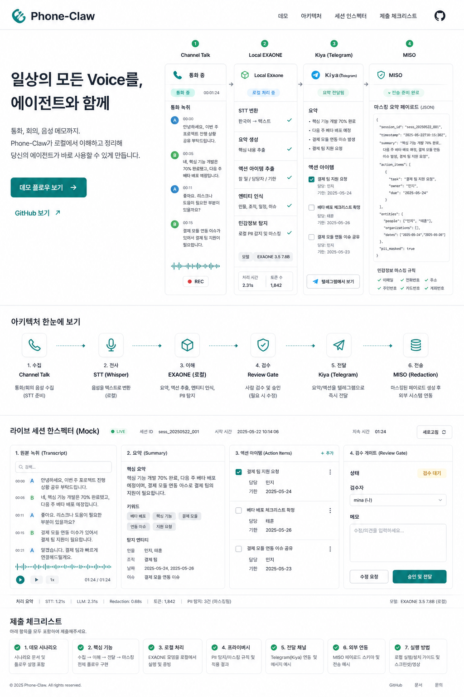

내일 오후 3시 픽업 일정 확인 요청
일상의 모든 Voice를, 에이전트와 함께
Phone-Claw는 통화와 회의에서 생긴 음성 맥락을 로컬에서 전사/요약하고, Kiya와 MISO 같은 업무 에이전트가 안전하게 읽을 수 있는 작업 단위로 바꿉니다.
Live mock session
approved_for_external_workflow

요약, 긴급도, 액션아이템 생성
요약 전송 후 캘린더 후보 확인
검수된 비식별 payload만 공개
제출 데모 플로우
실제 고객 데이터 없이도 심사위원이 입력, 로컬 처리, 에이전트 전달, MISO 제안 경계를 한 번에 확인할 수 있는 mock session입니다.
Selected Artifact
채널톡 통화 전사문
source/channel-talk.payload.json
고객이 내일 오후 3시 납품 가능 여부와 대체 픽업 시간을 문의했습니다.
raw transcript
local only
agent action
prepare
review gate
required
아키텍처 요약
Vercel 페이지는 제출용 mockup이고, 실제 민감 처리는 로컬 Mac mini에서 실행합니다.
Input
Channel Talk / Meeting / Future ixi-O
Local Bridge
n8n + Phone-Claw storage
Local AI
Whisper small + EXAONE 1.2B
Agent
Kiya summary + calendar command
Workflow
MISO custom tool proposal
Mock 세션 인박스
실제 제출 페이지에서는 비식별 샘플만 보여주고, 원문은 로컬 데모에서 확인합니다.
Source
Mode
Status
Redacted summary
Channel Talk
call
pending review
고객이 내일 오후 3시 픽업 가능 여부와 대체 시간을 문의했습니다.
Private Mode
meeting
kiya sent
OBA 제출 전 최종 점검 미팅을 캘린더 후보로 제안했습니다.
Future ixi-O
call
planned
통화 앱 연동 시 동일한 voice-session 계약으로 확장합니다.
제출에서 보여줄 메시지
“음성은 어디에서 오든 같은 voice-session 계약으로 들어오고, 민감한 처리는 로컬에서 끝내며, 에이전트에는 검수된 작업 맥락만 전달한다”는 점을 가장 앞에 둡니다.
- LG U+ Track: Voice AI 사례와 EXAONE 활용을 화면 첫 흐름에서 명확히 보여줍니다.
- MISO Track: 직접 push가 아니라 custom tool/OpenAPI와 inbound schema 제안을 분리합니다.
- Security: raw audio와 raw transcript는 로컬에 두고, 검수된 redacted payload만 외부에 엽니다.
- Demo: 실제 고객 통화 없이도 mock session으로 전체 흐름을 설명할 수 있습니다.